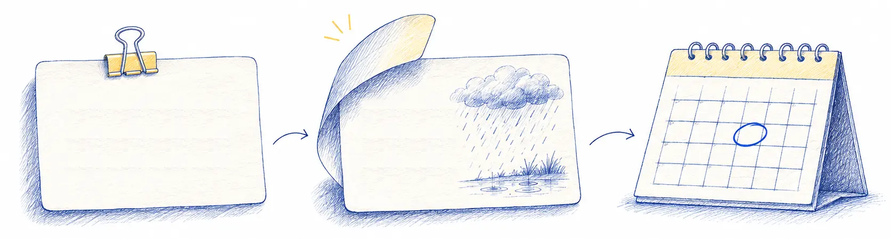
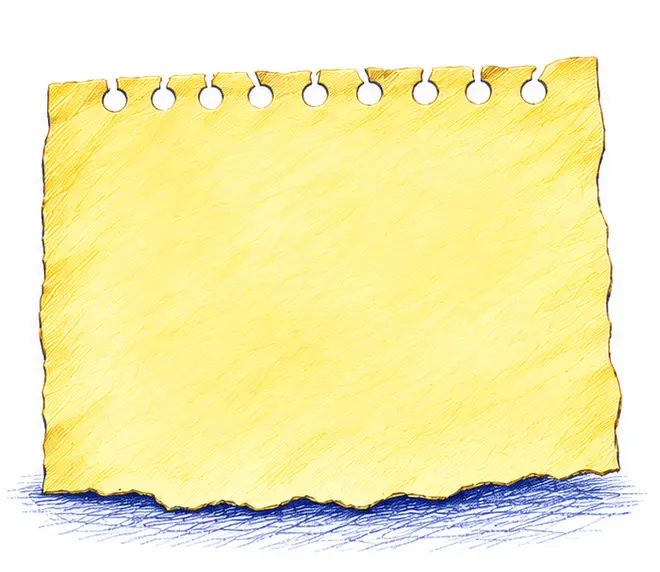

Free
0 ₽
- Повторяйте карточки сколько угодно.
- До 10 курсов и 20 наборов, включая свои и сохранённые.
- Один класс до 30 учеников.
Загрузите аудио или видео с пары. Соберите конспект и проверьте себя перед зачётом.
Запоминальня — сервис, где можно создавать карточки для запоминания и заниматься по ним онлайн. На одной стороне карточки вопрос, на другой — ответ. Попробуйте вспомнить ответ, переверните карточку и сверьтесь.
Соберите свой набор к зачёту или откройте курс другого пользователя. Запоминальня учитывает ваши ответы и подбирает время следующего повторения для каждой карточки. Так работает интервальное повторение.

Загрузите аудио или видео с пары. Сначала вы получите расшифровку. По ней можно составить конспект, а из него — карточки. Перед сохранением поправьте термины и оставьте вопросы, которые преподаватель просил подготовить к зачёту.
Скопируйте сразу два столбца, например английские слова и их переводы. Вставьте их в редактор набора. Перед сохранением вы увидите обе стороны каждой карточки.
Запишите вопрос так, как его задаёт преподаватель, и добавьте ответ. В карточках можно использовать формулы, код и изображения. Например, на одну сторону поместите схему сердца с номерами, на другую — названия отделов под этими номерами.
Попросите своего ИИ-помощника: «Составь 10 карточек по этому конспекту и сохрани их в Запоминальне». Помощник подготовит вопросы и ответы, а набор появится в вашей библиотеке.
Открытый API доступен бесплатно. Для помощников с поддержкой MCP есть готовый коннектор. На бесплатном тарифе — до 500 операций записи в неделю.
Как подключить помощникаВозьмём английское слово drizzle. В одном режиме вы вспоминаете перевод, в другом — пишете слово по памяти, в третьем — узнаёте его на слух.
Найдите курс по теме, которую сейчас изучаете. Прочитайте урок и проверьте себя по карточкам к нему.
Курс состоит из разделов и уроков. Внутри урока — объяснение темы и карточки, по которым можно себя проверить.
Карточки к уроку
Карточки к уроку
Прочитайте урок, затем откройте карточки и попробуйте ответить по памяти. Если что-то забылось, вернитесь к нужному месту в уроке.
Можно собрать курс и из своих материалов. Разложите конспекты по урокам и добавьте к каждому карточки с вопросами и ответами.
Посмотреть курсы
Частые ошибки
drizzle — 6 ошибок

Разобрать drizzle.
Попросить примеры.
Пригласите учеников в класс и задайте на четверг набор английских слов о погоде. В отчёте по заданию вы увидите, кто уже занимался, сколько карточек прошёл каждый ученик и как справился с тестом.
Отчёт по карточкам поможет подготовиться к уроку. Например, если многие ошиблись на слове drizzle, разберите его вместе и попросите класс привести примеры.
Бесплатно можно вести один класс до 30 учеников и назначать до трёх активных заданий одновременно. Разбор частых ошибок по карточкам и выгрузка отчётов в Excel доступны на Plus и Pro.
Открыть классы в кабинетеДо пары пять минут — хватит на несколько карточек. Подключите Telegram или VK в настройках Запоминальни, откройте чат с ботом и нажмите «Учить сегодня».
Бот предложит набор, который пора повторить. Если хотите позаниматься по другой теме, откройте «Мои наборы» и выберите её сами.
Отвечайте прямо в чате. Результаты сохранятся в вашем кабинете.
Подключить бота в настройкахЗанимайтесь по карточкам бесплатно во всех пяти режимах. Если хотите превращать записи лекций в конспекты и карточки, выберите тариф по тому, сколько часов лекций у вас в неделю.
0 ₽
299 ₽ в месяц или 2 499 ₽ в год
999 ₽ в месяц или 9 999 ₽ в год
Разовая оплата · без автосписаний. Обучение остаётся доступным на любом тарифе.
5 и 25 часов — объём записей при отложенной расшифровке. В быстром режиме одна минута записи расходует четыре минуты лимита.
Подойдёт аудио или видео размером до 1 ГБ. Например, можно загрузить запись с диктофона в M4A, аудиофайл MP3 или видео в MP4. Расшифровка своих записей доступна на тарифах Plus и Pro.
Загрузите запись и дождитесь расшифровки. Проверьте имена и термины, затем запустите создание конспекта. Из готового конспекта можно собрать карточки для самопроверки. Обработка записи доступна на Plus и Pro.
Да. Если сервис неверно распознал фамилию преподавателя или термин, исправьте текст перед созданием конспекта. Готовый конспект и карточки тоже можно редактировать.
Расшифровку видите только вы в личном кабинете. Готовые конспекты, наборы карточек и курсы по умолчанию публичны. На Plus и Pro для каждого материала можно выбрать «Только мне».
Поместите вопросы в первый столбец, а ответы — во второй. Скопируйте оба столбца и вставьте их в редактор набора. Каждая строка станет карточкой. Перед сохранением вы увидите обе её стороны. Импорт из таблицы бесплатный.
Разбейте каждый билет на несколько коротких вопросов. Например, для билета о климате Японии подойдёт вопрос «Почему зимой на западном побережье Хонсю выпадает много снега?». Ответьте вслух по памяти, затем переверните карточку и сверьтесь. Когда разберёте все вопросы, попробуйте рассказать билет целиком.
Запоминальня подбирает дату следующего повторения для каждой карточки по вашим ответам. Если вы забыли слово, оно вернётся в тренировку раньше. Если несколько раз вспомнили его без труда, перерыв станет длиннее. Интервальное повторение доступно и на бесплатном тарифе.
Ваши карточки, курсы и конспекты сохранятся. Вы сможете читать конспекты, повторять карточки и проходить тесты. Скрытые материалы останутся закрытыми. Plus или Pro снова понадобится, если вы захотите расшифровать новую запись или автоматически составить по ней конспект и карточки.
Откройте расшифровку лекции и создайте по ней конспект. Из конспекта можно сразу собрать карточки для повторения. Перед сохранением набора можно поправить ответы и убрать лишние вопросы. Функция доступна на Plus и Pro.
Теперь в конце урока можно ответить на вопросы по пройденной теме и сразу увидеть результат. Если что-то забылось, объяснение здесь же, выше на странице. Когда будете готовы, переходите к следующему уроку.